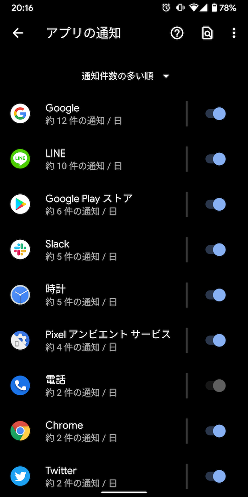

inboxと通知の整理
inboxの整理
ある日、毎朝メールのinboxを見てすべてのメールをアーカイブするという、無意味な作業がルーティン化されていることに気づいて、本当に必要なものだけメールを受け取るようにした。
一週間inboxにメールをためておいて、休日にいっせいに不要なメールunsubscribeした。海外のサービスはunsubscribeにログインが不要なことが多いので簡単だけど、日本のサービスはログインが必要なことが多くけっこう時間がかかる。
Androidの通知設定の見直し
inboxを整理した結果とてもスッキリしたので、ついでにAndroidの通知設定も見直すことにした。
通知の設定には、音やバイブレーションを起こすアラート、画面の表示だけするサイレント、そして通知しないの3種類あり、以下のように意識して設定を分けている。
- アラート：すぐにアクションを起こす必要がある情報の通知
- サイレント：すぐにアクションを起こす必要はないけど、注意しておきたい情報の通知
- 通知しない：知る必要のない情報の通知
設定アプリから通知頻度の多い順にアプリを並べて、通知頻度が高い項目を上のような方針で設定を更新したところ、無意味な通知に煩わされることがまったくなくなった。
